Home / Demolition & Breaking Equipment / SDS-plus tile chisel, hardened

Illustration similar – shows the product type.
Demolition & Breaking Equipment
SDS-plus tile chisel, hardened
Interchangeable chisel for hammer drills to remove tiles and plaster.
SDS-plus tile chisel for removing wall and floor tiles and plaster, fitting hammer drills with SDS-plus chuck. Hardened steel and a clean strike face are the quality markers.
Technical data
| Shank | SDS-plus |
|---|---|
| Material | hardened steel |
| Use | Tile, plaster, masonry |
| Customs tariff number (HS) | 82079099 |
EU standards and regulations
GPSR (EU) 2023/988Product safety, EU responsible personREACH (EG) 1907/2006Substance restrictions (coatings, plastics)DIN 8033SDS-plus shank dimensions
Goes well with

More products in this category
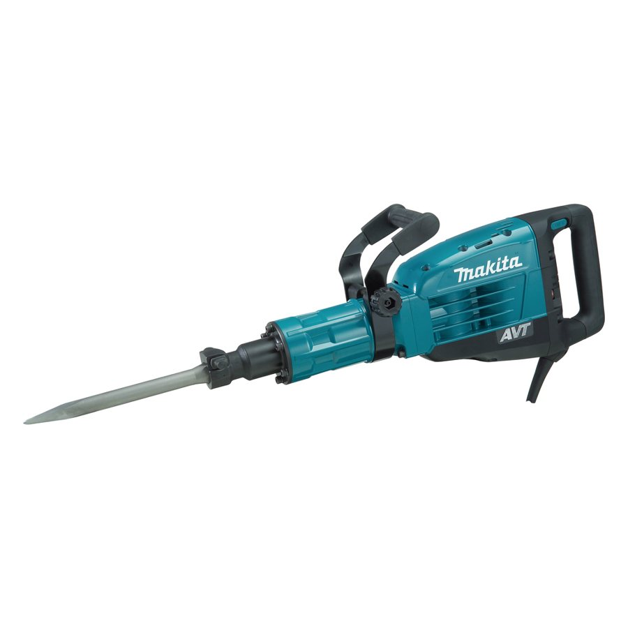
Electric demolition hammer 15 kg, 30 mm hexHeavy electric demolition hammer for concrete, wall and floor breaking with a 30 mm hex chuck.
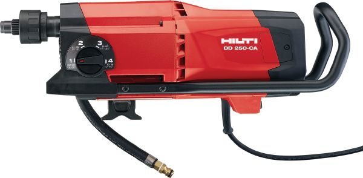
Diamond core drilling machine 250 mm with standWet/dry drilling rig with a 2,200 W motor and drill stand for core holes up to 250 mm in concrete and masonry.
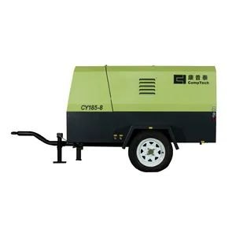
Towable diesel screw air compressor approx. 5 m³/min (185 cfm), 7 barTowable diesel construction compressor as a compressed-air source for pneumatic hammers, blasting and drilling equipment on sites without mains power.
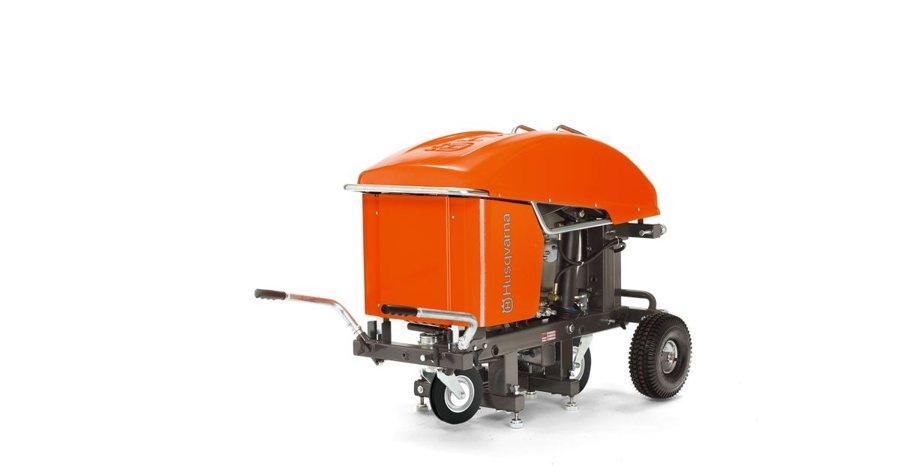
Diamond wire saw machine, electric, for concrete and reinforced concreteElectric wire saw machine for low-vibration cutting of reinforced concrete components of any size.

Passive shoulder/arm exoskeleton for overhead workSpring-assisted exoskeleton without battery that supports the arms during work above shoulder height.
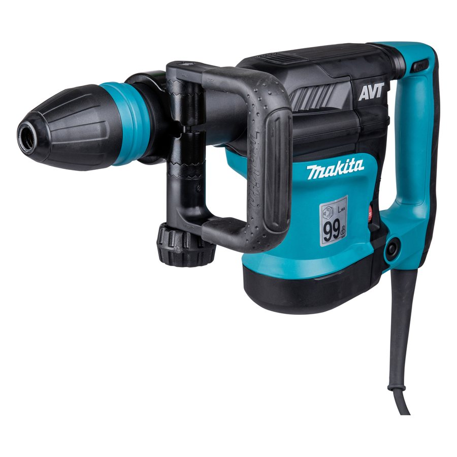
Electric chisel hammer 5 kg, 1,100 W (light class)Light chisel hammer for tile, plaster and screed work in interior fit-out – easy to guide and low in fatigue.
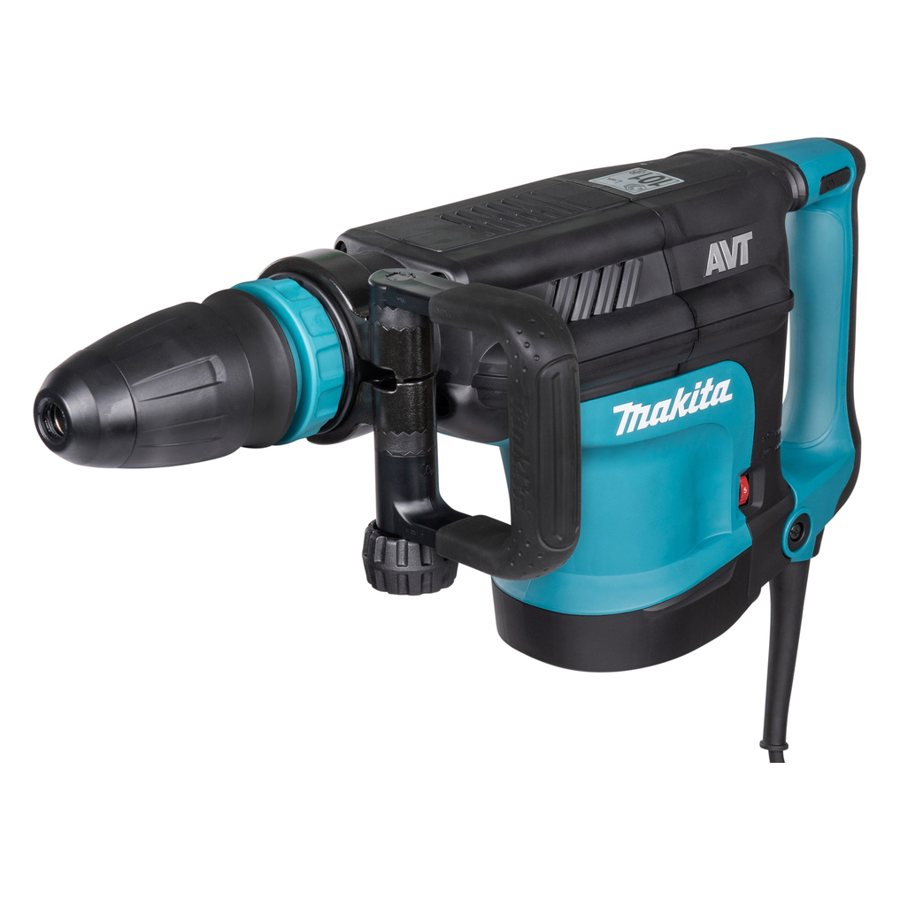
Electric chisel hammer 10 kg, SDS-max, 1,500 WMid-weight SDS-max chisel hammer for concrete, masonry and screed removal as well as chases and openings in strip-out.
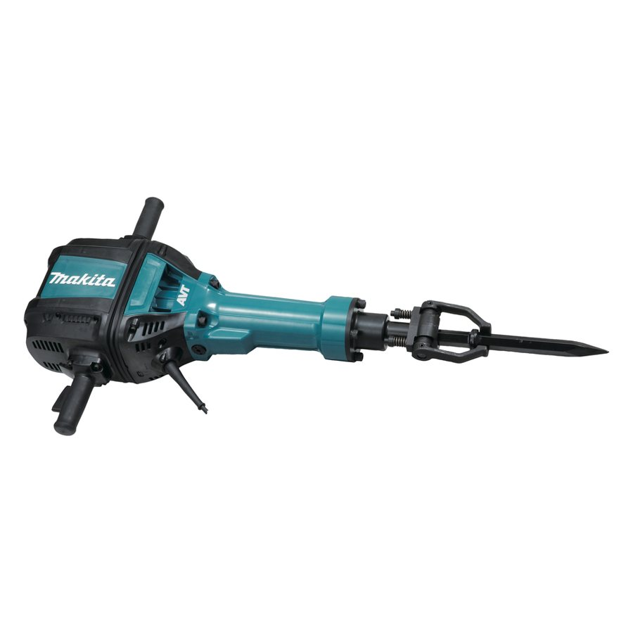
Electric demolition hammer 35 kg, 2,000 W, hex shank (heavy class)Heavy electric demolition hammer for foundation, reinforced concrete and industrial floor demolition with a 2,000 W motor.
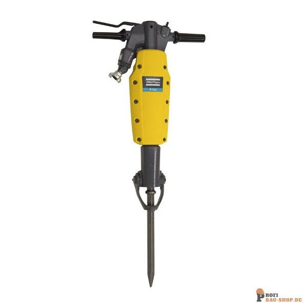
Pneumatic breaker (air pick) 20 kg, 5–6.3 barHand-held pneumatic breaker of the 20 kg class for breaking concrete, asphalt and masonry without mains power.
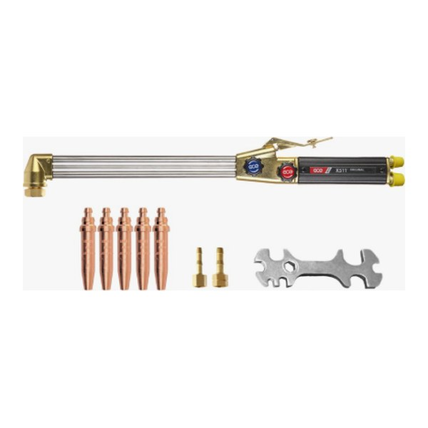
Oxy-fuel cutting outfit (torch set), complete, acetylene/oxygenComplete outfit for flame-cutting steel: cutting torch, pressure regulators for oxygen and fuel gas, hoses and box.

Hydraulic demolition shear for steel beams (excavator attachment)Hydraulic shear as an excavator attachment for cutting steel beams, profiles and pipes in demolition.
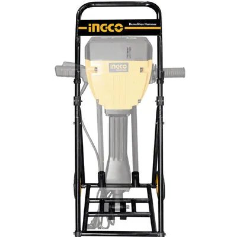
Breaker stand / hammer support frame for demolition hammersSteel frame that supports and guides the heavy demolition hammer – relieves arms and back when chiselling floors and walls.
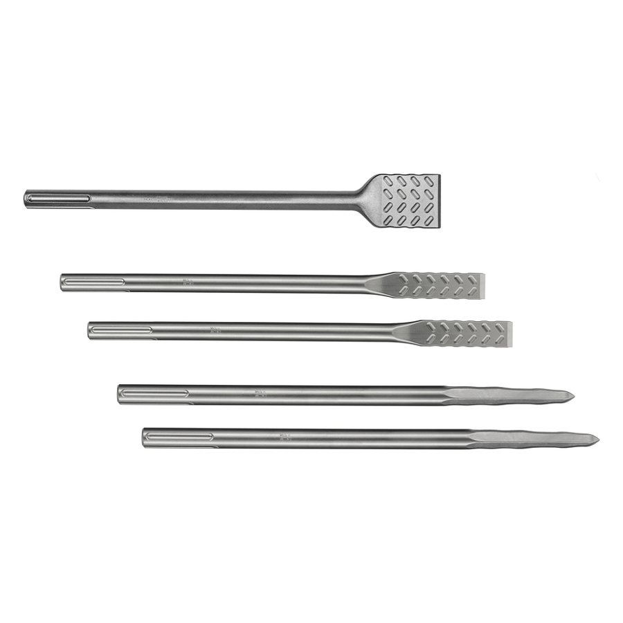
SDS-max chisel set, 3-piece (point, flat and wide chisel, 400 mm)

Diamond wet core bit Ø 250 mm, 1 1/4 inch UNC connection, 450 mm working lengthWet diamond core bit Ø 250 mm with 1 1/4 inch-7 UNC connection and 450 mm working length for reinforced concrete, the wear part of the core drill rig.

30 mm hex chisel set for breaker hammers (point, flat and spade chisels, 410 mm)
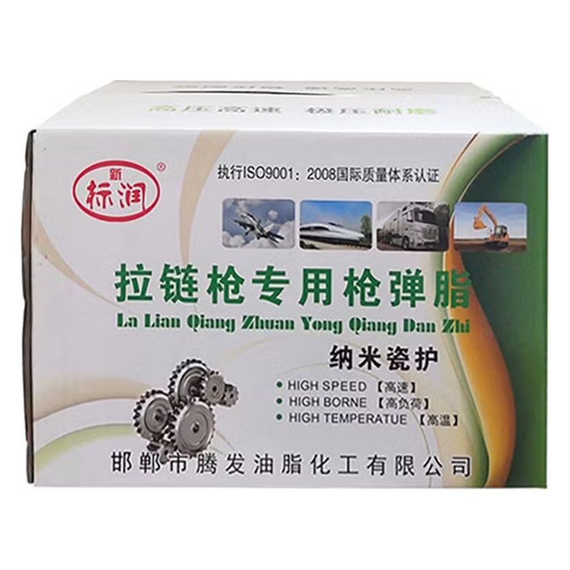
Chisel grease / chisel-hammer paste, 400 g cartridge (lithium complex grease)Lithium-complex chisel grease in a 400 g cartridge for regular greasing of chisel shanks and guide bushes on chiselling and breaker machines.
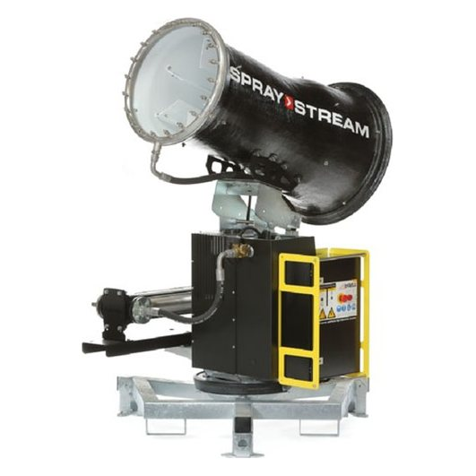
Water cannon / dust-suppression machine (fog cannon) for demolition, 25–30 m throw, 3.5 kW, 36 nozzlesFan-driven fog cannon with 36 stainless-steel nozzles, 25–30 m throw and a 340° swivel range: suppresses demolition, crushing and handling dust with 15–18 l of water per minute.

Steel splitting wedge with shims for stone and concreteHand tool for controlled splitting of natural stone and concrete.

Compressed-air hose reel, spring retract, steel, 10 mWall-mounted reel with automatic retraction for air hose.
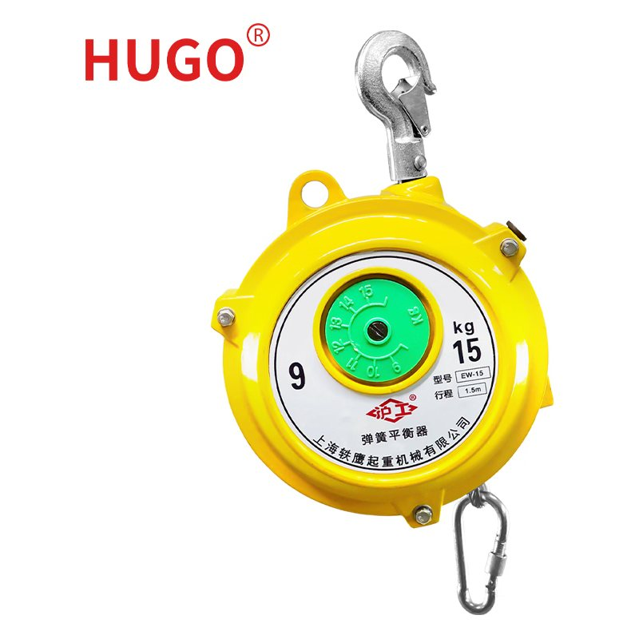
Spring tool balancer 22-30 kgSuspendable spring balancer that offsets tool weight.

Hydraulic rock/concrete splitter, towableHydraulic splitter for vibration-free demolition of concrete and rock.

Electric walk-behind floor stripper for carpet and tilesWalk-behind scraper to remove carpet, tiles and floor coverings.